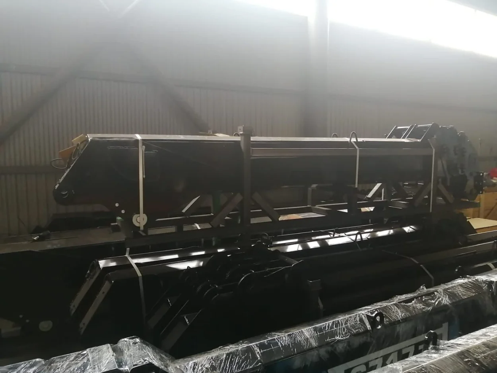

Կռունկ-մանիպուլյատորի սպասարկում․ ինչ ստուգել և ինչ հայտնել մասնագետին
Միացման տեղում յուղի հետքը, դժվարաշարժ լծակը և սլաքի դանդաղ շարժումը տարբեր ստուգումներ են պահանջում։ Նշեք, թե որտեղ և ինչ պայմաններում եք նկատել խնդիրը։

Հիդրավլիկ համակարգ և շարժական հանգույցներ
Զննեք ճկափողերը․ մաշվածությունը, ճաքերը կամ միացումների շուրջ յուղի հետքերը կարող են վկայել անսարքության մասին։ Աշխատանքային հեղուկի մակարդակը ստուգեք ըստ տվյալ մոդելի ձեռնարկի։ Նույն ձեռնարկում նշված են յուղի պահանջվող տեսակը, հոդերի յուղման կետերը և սպասարկման պարբերականությունը։ Ճնշման տակ գտնվող համակարգում արտահոսքը ձեռքով փնտրելը վտանգավոր է։

Հենարաններ, կառավարում և էլեկտրական համակարգ
Զննեք հենարանները՝ ճաքեր կամ ձևախախտումներ հայտնաբերելու համար։ Եթե հենարանը չի ամրանում աշխատանքային դիրքում, լծակը խցանվում է կամ բեռնունակության սահմանափակիչը սխալ է ցույց տալիս, դադարեցրեք աշխատանքը և դիմեք մասնագետին։ Ըստ ախտանշանի՝ կարող է պահանջվել ամրացման մեխանիզմի, կառավարման ձգաձողերի, հաղորդալարերի կամ տվիչների ստուգում։
Ինչ տեղեկություն ուղարկել մասնագետին
Հայտնեք կռունկի մոդելը և նկարագրեք կոնկրետ խնդիրը։ Եթե սլաքը դանդաղ է շարժվում, նշեք՝ որ շարժման ժամանակ և արդյոք խնդիրը պահպանվում է յուղը տաքանալուց հետո։ Սխալի դեպքում կցեք էկրանի լուսանկարը։ Պահեստամաս պատվիրելիս նշեք նաև դրա կատալոգային համարը։